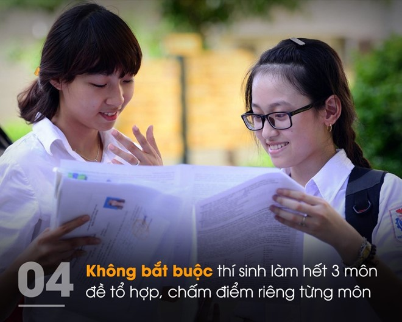

<section class="section-wrap" style="margin-top: 60px;">
	<div class="thongtin-wrap" style="position: relative;">
					<div class="quangcao" style="width: 275px; height: 800px; position: absolute; top: 20px; left: 0px;">
						
						
					</div>
	<div class="container infomation-content">
		<div class="infomation-content-us">
		
			<h1 class="the-article-title cms-title">Những điều lưu ý về phương án thi THPT quốc gia 2017</h1>
			<p class="the-article-summary cms-desc">
			Theo Bộ GD&amp;ĐT, bài thi tổ hợp khác bài thi tổng hợp và tích hợp. Thí sinh không bắt buộc làm hết 3 môn trong bài thi tổ hợp, điểm liệt cho từng môn là 1 điểm.
			</p>
		<div class="the-article-body cms-body">
			<p>Chiều 28/9, Bộ GD&amp;ĐT công bố phương án thi THPT quốc gia 2017.&nbsp;Về cơ bản, phương án thi THPT quốc gia 2017 giống dự thảo của Bộ GD&amp;ĐT đưa ra trước đó.</p>
			<p>Thí sinh sẽ thi&nbsp;4 bài trắc nghiệm gồm Toán, Ngoại ngữ, Khoa học tự nhiên (tổ hợp Vật lý, Hóa học, Sinh học) và Khoa học xã hội (tổ hợp Lịch sử, Địa lý, Giáo dục công dân) đối với thí sinh hệ giáo dục THPT.</p>
			<h4><strong>Thi tổ hợp khác tổng hợp và tích hợp</strong></h4>
			<p>Một trong những điểm khác biệt quan trọng của kỳ thi THPT quốc gia 2017 là việc hình thành các bài thi tổ hợp Khoa học tự nhiên và Khoa học xã hội.</p>
			<p>Trong đó, học sinh giáo dục THPT thi 4 bài gồm: 3 bài thi bắt buộc là Toán, Ngữ văn, Ngoại ngữ và một bài thi tự chọn trong bài thi Khoa học Tự nhiên hoặc bài thi Khoa học Xã hội. </p>
			<p>Với bài thi Ngoại ngữ, thí sinh có thể chọn thi một trong các thứ tiếng: Anh, Nga, Pháp, Trung, Đức, Nhật. Thí sinh có thể dự thi cả 5 bài thi để sử dụng kết quả xét tuyển vào đại học và cao đẳng.</p>
			<table class="picture" align="center">
					<tbody>
					<tr>
					<td >
					</td>
					</tr>
					<tr>
					<td class="pCaption caption">Một trong những điểm mới trong kỳ thi THPT quốc gia 2017 là không bắt buộc thí sinh làm hết 3 môn đề tổ hợp. <em>Ảnh: Phượng Nguyễn.</em></td>
					</tr>
					</tbody>
			</table>
			<p>Học&nbsp;sinh hệ giáo dục thường xuyên thi 3 bài thi gồm: 2 bài thi bắt buộc là Toán, Ngữ văn và một bài thi tự chọn giữa Khoa học tự nhiên hoặc Khoa học xã hội. Thí sinh có thể chọn thi thêm bài thi Ngoại ngữ để xét tuyển vào cao đẳng, đại học nếu có nguyện vọng.</p>
			<p>Các bài Toán, Ngoại ngữ, Khoa học tự nhiên và Khoa học xã hội thi theo hình thức trắc nghiệm khách quan. Mỗi thí sinh trong cùng phòng thi có một mã đề thi riêng. Thí sinh làm bài thi trên phiếu trả lời trắc nghiệm. Phiếu này sẽ được chấm bằng phần mềm máy tính. </p>
			<p>Theo lý giải của Thứ trưởng GD&amp;ĐT Bùi Văn Ga, bài thi tổ hợp chỉ là sự thay đổi về kỹ thuật khi ghép ba môn thi riêng lại làm một. Đó không phải sự kết hợp kiến thức của các môn thi, đòi hỏi sự phức tạp hơn nhiều.</p>
			<p>Ông Mai Văn Trinh, Cục trưởng Cục Khảo thí và Kiểm định chất lượng giáo dục, Bộ GD&amp;ĐT cũng cho biết sắp tới sẽ chuyển bài thi từ tổ hợp sang tổng hợp và tích hợp, phù hợp với đổi mới chương trình phổ thông.</p>
			<h4><strong>Điểm liệt cho từng phần trong bài thi tổ hợp</strong></h4>
			<p>Khác với những năm trước, điểm liệt được tính chung cho toàn bài thi. Nhưng với bài thi tổ hợp của kỳ thi THPT quốc gia 2017, điểm liệt của mỗi bài thi Khoa học xã hội, Khoa học tự nhiên và điểm liệt thành phần của mỗi môn thi trong bài thi tổ hợp là 1 điểm. </p>
			<p>Như vậy, các trường cao đẳng, đại học có thể yêu cầu xét tuyển thí sinh theo khối A với bài thi Toán và điểm Vật lý, Hóa học (trong bài thi tổ hợp).</p>
			<p>Trước băn khoăn về điểm liệt cho mỗi môn thi trong bài tổ hợp là 1 có phù hợp khi học sinh “đánh bừa” cũng có thể đạt 2,5 điểm, ông Mai Văn Trinh khẳng định mức điểm liệt như vậy là hợp lý, sau khi đã có những thống kê, nghiên cứu từ thực tế.</p>
			
		</div>
		</div>
		
	</div>
	</div>
</section>


